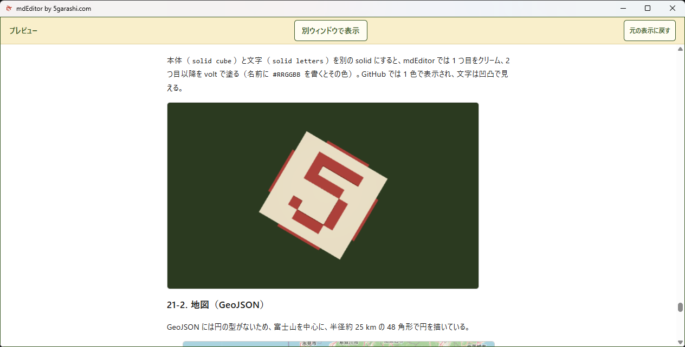

mdEditor 1.0.12 — 図も、3Dも、動画も。図も、3Dも、動画も。
冒頭は3Dモデルを回しながらmdEditorを紹介。そのあとdiagram-testを上から下へ見せ、編集・表示・取り込み・保存などの主な機能を実画面で紹介します。
実録画はソース版1.0.12。Store配信版の番号は今回未確認です。
MP4PDF見て驚き、触って理解する

- 3Dはドラッグで回転、ホイールで拡大・縮小
- 編集・連動スクロール・別窓プレビュー・目次
- 地図と動画を読み込み、文書の中で表示
- Wordを取り込み、Word・PDF・HTML・PNGへ
現在公開中の使い方Microsoft Store収録について
この収録では外部の画像・動画・詳細地図を許可しています。Wordの色や配置は取り込みません。Wordへの図・数式は画像になります。数値の自動計算はしません。
主な機能
- 書きながら横で仕上がりを確認。スクロールも連動
- プレビューを 2 台目のディスプレイに。編集中の行を表示
- ビューアーとしても。プレビューをウィンドウいっぱいに
- Mermaid・Graphviz の図と数式をオフラインで表示
- 3D モデル（STL）をマウスで回して確認
- 地図（GeoJSON）。許可すると OpenStreetMap の地図も
- 約 40 の言語のコードを色分け。PDF・Word にも色が残る
- 見出しから目次を作り、ボタン 1 つで新しくする
- GitHub と同じ注意書き・フロントマター・折りたたみ
- 文書の中の動画をプレビューで再生
- プレビューと同じ見た目の PDF をワンクリックで
- Word・HTML・メール・CSV・JSON・Jupyter Notebook・画像を開ける
- HTML・PNG・Word・CSV・JSON・Jupyter Notebook・テキストに保存
- 画像はドロップや貼り付けで、そのまま文書に
- 安全な保存と、異常終了からの自動復元
- Shift_JIS・EUC-JP・UTF-8 のファイルを正しく開ける
- ネット上の画像・動画・地図は、許可したときだけ読み込む
- 広告なし、計測なし、アカウント不要
- キーボードで全操作。ショートカットも変更できる
- 画面読み上げ・文書の読み上げ・ダークモードに対応